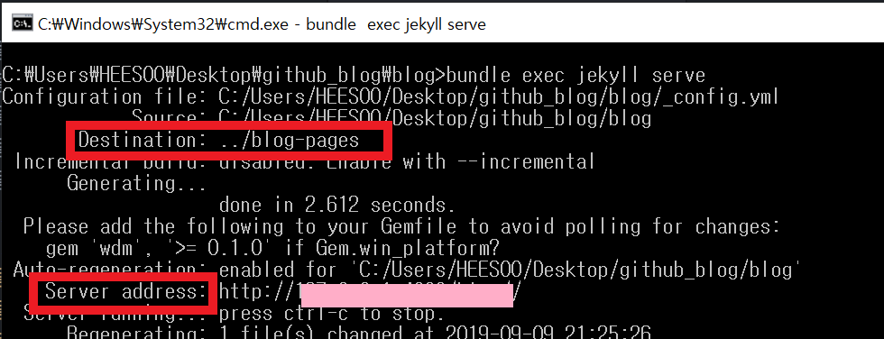

내 블로그 테마는 https://github.com/jekyller/jasper를 사용하였다.
근데 나처럼 home과 about을 제외한 카테고리 클릭 시 404가 발생하는 사람들이 많았나보다. 이슈에까지 등록되었으니..
일단 404의 에러가 코드의 문제는 아니었기 때문에(포크따온 그대로여서 틀렸을 리 없었다) 안되는 경우의 수를 모두 생각했다.
༼;´༎ຶ ༎ຶ༽여기서부터 개발의 울화통 터지기 시작
내가 생각한 안되는 이유는 gh-pages로 push하지 않아서가 아닐까 했는데 역시나 이건 아니었고~!
결론은 jekyll을 사용하지 않아서였다. 다른 테마는 어떤지 모르겠지만 내 것은 보안상의 이유로 Github가 plugins 폴더를 읽지 않아서 이런 오류가 발생하였다. 그리고 이 설명은 테마 개발자의 README.md에 자세히 적혀 있었다.
해결 방법
- ruby를 다운받는다.
https://rubyinstaller.org/downloads/
- ruby 프롬프트 창을 열고
gem install jekyll bundler을 입력하면 jekyll이 다운받아진다.
- 이제 블로그 파일들이 있는 곳에서 cmd창을 연 후,
bundle exec jekyll serve를 입력한다.

Server address를 열면 실행되는 블로그를 확인할 수 있다. 이때 jekyll serve를 실행하면서 나온 파일들은 Destination의 위치에 저장된다(해당 위치는 config.yml에서 변경할 수 있다). 나의 경우 작성한 새 포스트들은 master에, jekyll을 실행한 후의 파일들은 gh-pages에 push하여 블로그를 업로드한다.
해결 완료!
jekyll을 사용하기 이전에는 push한 후에만 갱신된 블로그를 볼 수 있어서 불편했는데, 이제는 로컬 호스트로 블로그를 확인한 후 최종을 github에 올릴 수 있게 됐다!
결론은.. 남의 코드를 쓸 때는 README.md를 잘 읽어보자T.T